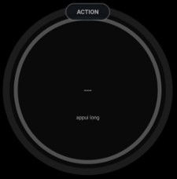

🔘
Action
Bascule une action moteur (démarrage / arrêt) et ses effets de session
ANLACT · analogique

Possibilités
- Jauge ronde avec le libellé de l'action (ex. « Démarrage » / « Arrêt moteur »). Le titre « ACTION » est rendu par la pastille de titre standard en haut du cadran (masquable via Options ▸ « Masquer le titre »).
- Interrupteur basculant : position gauche OFF (gris) / droite DONE (vert).
Gestes
– Appui long : choisir le type d'action (Démarrage / Arrêt moteur). Le dialogue propose un bouton « Effacer » pour retirer l'action assignée et un bouton « Fermer » pour annuler.
·· Double-tap : basculer DONE ↔ OFF et déclencher les effets de session.
Effets au basculement
- Démarrage (DONE) : lance l'enregistreur de vol, cale l'horizon (EFIS), démarre le suivi carburant, horodate le départ — puis ouvre trois dialogues séquentiels :
- Carburant embarqué — saisie du volume initial.
- Étalonnage altimétrique — calibration de l'altimètre.
- Horamètre départ — saisie du relevé de départ (format NNN.NN), stocké dans les instruments ANLHRM / NUMHRM.
- Démarrage (OFF) : arrête l'enregistreur et le suivi, efface l'heure de départ.
- Arrêt moteur (DONE) : arrête l'enregistreur, horodate l'arrivée — puis ouvre deux dialogues séquentiels :
- Horamètre arrivée — saisie du relevé de fin de vol (format NNN.NN, optionnel — « Annuler » passe à l'étape suivante).
- Dossier de vol — récapitulatif complet de la session (horaires, durée, altitude calée, statistiques FDR, et section Horamètre si au moins un relevé est renseigné).
Note
- Chaque case ANLACT mémorise son action et son état DONE/OFF. Les horaires alimentent l'instrument Session de vol (CMNFGT).